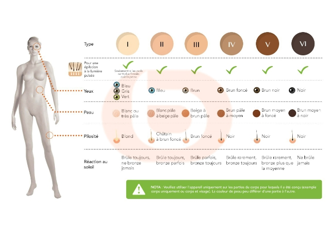

ÉPILATION À LUMIÈRE PULSÉE
L’épilation à lumière pulsée, c’est quoi ?
Le principe de la lumière pulsée est très simple. L’appareil émet des flashs lumineux de forte intensité qui vont être absorbés par le pigment du poil, cette lumière va se transformer en chaleur et créer une micro brûlure. C'est cette réaction au niveau de la racine du poil (le bulbe) qui va ralentir la repousse.
La lumière pulsée est une méthode diffuse et moins puissante que le laser pour un usage à domicile et une épilation semi-définitive.
L’épilation à lumière pulsée, c’est pour qui ?
Si beaucoup d’appareils sont utilisables sur tous les types de peau, choisissez cependant le mieux adapté en fonction de votre carnation. Certains appareils ne fonctionnent pas sur les peau très foncées.
Définissez votre type de peau grâce à cette échelle.
Echelle Fitzpatrick :
Pour une sécurité maximale, certains appareils détectent automatiquement la couleur de la peau. Ils empêchent l'utilisation de l'épilateur si votre couleur de peau n'est pas adaptée à l'appareil.
L’épilation à lumière pulsée, comment ça marche ?
Vous devez arrêter de vous épiler. Oui, la technique de lumière pulsée se pratique sur poils courts.
Pour que les poils soient plus drus et foncés (ce qui favorise l'épilation), rasez la zone que vous souhaitez épiler 2 à 3 jours avant.
Le jour J, il vous suffit d'utiliser l'épilateur sur la zone choisie (jambes, maillots, aisselles et même le visage). Pour un résultat impeccable, il faut compter environ 5 à 6 séances espacées de 2 semaines. Mais vous remarquerez déjà les premiers résultats après 3 séances. A terme, près de 80 % des poils ne repoussent plus. Pour garder la peau douce, il suffit de 2 à 3 retouches par an.
A savoir
L'ampoule de votre épilateur lumière pulsée a une durée de vie qui se comptabilise en nombre de flashs. Plus le nombre de flashs est élevé, plus vous pouvez utiliser votre appareil longtemps. Parfait pour les retouches à réaliser 2 à 3 fois par an. Pour une durée de vie confortable, choisissez une autonomie de plus de 200 000 flashs.
Le nombre de flashs n'est pas le seul critère à prendre en compte. Il est également important de savoir si l'ampoule de votre épilateur est remplaçable une fois épuisée. Dans ce cas, privilégiez un épilateur avec une autonomie moins longue, mais dont l'ampoule pourra être remplacée. Vous pourrez ainsi profiter de votre appareil bien plus longtemps.
L’épilation à lumière pulsée, quelles précautions ?
Respectez les indications fournies avec l’appareil
Ne cherchez pas à accélérer l’épilation en augmentant le rythme des séances
Protégez toujours votre peau du soleil au moins pendant 2 semaines après une séance d’épilation
Hydratez votre peau
Après une séance d’épilation, votre peau va forcément être un peu agressée. Alors pour la rafraîchir, l’hydrater (et vous faire pardonner), appliquez du gel d’aloe vera, votre meilleur allié !
Protégez les zones sensibles
Grain de beauté, tâches de naissance, cicatrices, tatouages… Nous vous conseillons de protéger à l’aide de patchs ou de pansements ces zones sensibles.